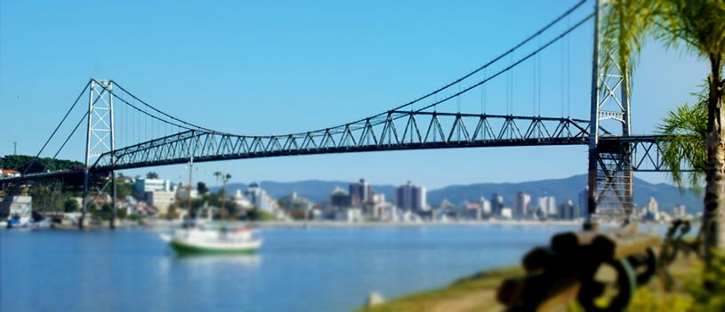

Florianópolis
Florianópolis é a capital do estado de Santa Catarina e uma das três ilhas-capitais do Brasil. Destaca-se por ser a capital brasileira com o melhor índice de desenvolvimento humano (IDH), da ordem de 0,875, segundo relatório divulgado pela ONU em 2000. Esse índice também a torna a quarta cidade brasileira com a melhor qualidade de vida, atrás apenas das
cidades de São Caetano do Sul e Águas de São Pedro, no estado de São Paulo, e Niterói, no estado do Rio de Janeiro. Localiza-se no centro-leste do estado de Santa Catarina e é banhada pelo Oceano Atlântico. Grande parte de Florianópolis (97,23%) está situada na Ilha de Santa Catarina, possuindo cerca de 100 praias, consideradas também as continentais.
História
Os habitantes da região de Florianópolis na época da chegada dos exploradores europeus eram os índios carijós, de origem tupi-guarani. Praticavam a agricultura, mas tinham na pesca e coleta de moluscos as atividades básicas para sua subsistência. Porém, outras populações mais antigas habitaram a ilha em tempos mais remotos. Existem indícios de presença do chamado Homem de Sambaqui em sítios arqueológicos cujos registros mais antigos datam de 4800 a.C.. A Ilha de Santa Catarina possui numerosas inscrições rupestres e algumas oficinas líticas, notadamente em várias de suas praias.
A Ilha de Santa Catarina era conhecida como Meiembipe ("montanha ao longo do mar") pelos carijós. O estreito que a separa do continente era chamado Y-Jurerê-Mirim, termo que quer dizer "pequena boca d'água" e também se estendia à própria ilha.
Pontos Turísticos
Considerada por muitos habitantes e turistas que a visitam como detentora de uma beleza singular, dotada de fortes traços da cultura açoriana, observados nas edificações, artesanato, no folclore, culinária e nas tradições religiosas, Florianópolis tem no turismo uma de suas principais fontes de renda.
Dentre os atrativos turísticos da capital salientam-se, presentemente, além das praias, as localidades onde se instalaram as primeiras comunidades de imigrantes açorianos, como Ribeirão da Ilha, Lagoa da Conceição, Santo Antônio de Lisboa e o próprio centro histórico da cidade.
Locais históricos em Florianópolis
Forte São José da Ponta Grossa Palácio Cruz e Sousa Forte Santo Antônio de Ratones Forte Sant'Anna e Museu de Armas